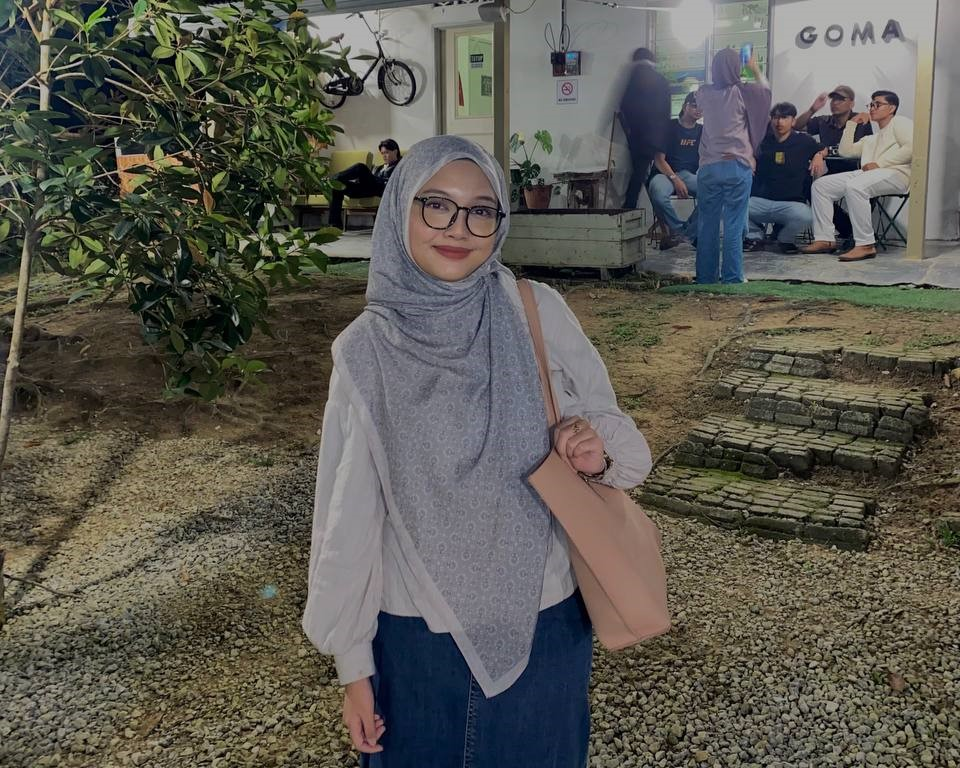
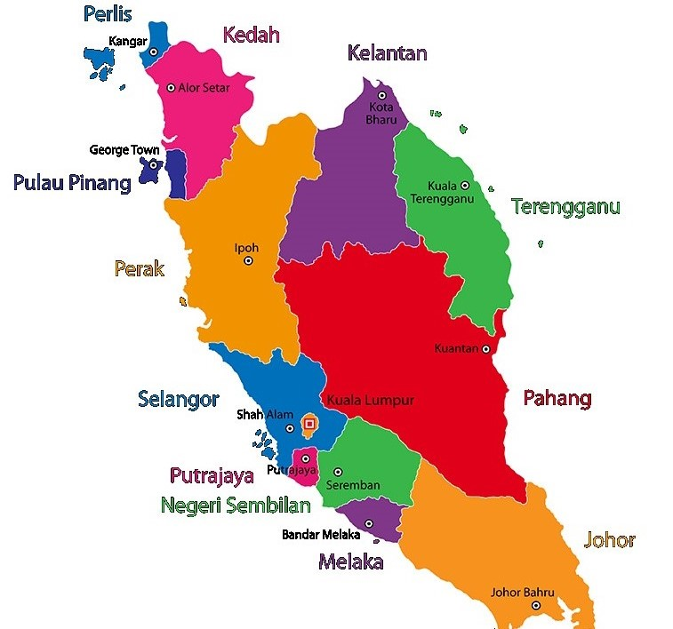

Home
About Me
Work Experience
Gallery

I was born in Kuala Lumpur, on 6th April 2004. I am the youngest of 6 siblings, which consist of 2 brothers and 3 sisters. I live with my single mother, and my 2 sisters in Bukit Antarabangsa, Ampang Selangor.
As an Information Management student, in the future, I dream to work in an IT environment such as web developer or content specialist.
For my hobby, during my leisure time, I love to watch movies and dramas. Most of the time, I prefer those with the genre of thriller. To me, it is fun that thrillers often
invlove complex plots, mysteries or puzzles that require viewer's attention. I enjoy the challenge of figuring out what is going to happen next or trying to predict the twists and turns,
keeping me mentally engaged. Not just that, I also enjoy the tension and excitement trigger the release of adrenaline, which give me a natural rush that can be exhilarating.
On the other hand, I also enjoy listening to sentimental ballad songs. Sentimental songs often evoke deep emotions such as love, longing, nostalgia, or even sadness.
These emotions are universal and relatable. Listening to songs that reflect how I feel or have felt in the past can provide me a sense of connection and validation.
These songs also can provide a sense of comfort. They make me feel less alone in my emotions, as though others have experienced similar feelings and are expressing them through music.
My Origin in Map

1) Click at Kuala Lumpur to know more
about my place of birth:
KL is the place of my birth.
2) Click at Kelantan to know more
about my hometown:
Kelantan is my hometown. My father is
from Kelantan, while my mother is from Kuala Lumpur. However,
I only visit my hometown occassionally since my father passed
away, and it has been quite some time that I have been there.
3) Click at Selangor to know more
about where I live:
Now, I live in Ampang, Selangor with my mother and my other siblings.
My Most Listened To Artists
My Go To Series and Movies
Western Series
- Pretty Little Liars
- One of Us Is Lying
- Gossip Girl
Movies
- Officer Black Belt
- The Intern
Kdramas
Back to Top